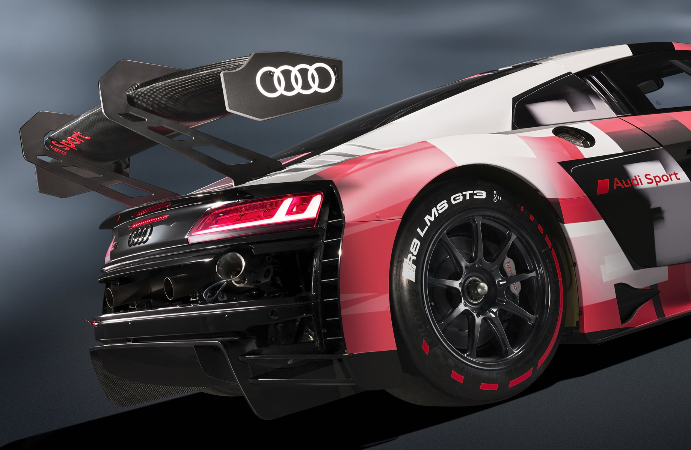
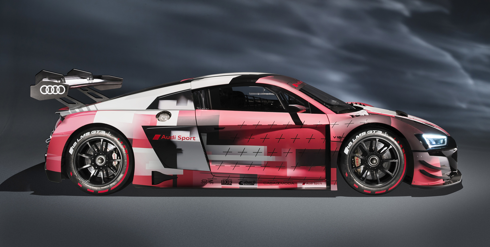

Audi R8 LMS GT3 Evo II привлечёт клиентов
широтой настроек
Леонид Попов, 22 июля 2021. Фото: Audi
Модель R8 LMS GT3 пребывает во втором поколении (первое было создано в 2009-м) и располагается
в табели о рангах между гоночными собратьями R8 LMS GT4 и Audi R8 LMS GT2.
Гоночный Audi R8 LMS GT3 Evo II в полном соответствии с названием стал второй эволюцией автомобиля, появившегося в 2015 году как R8 LMS и переработанного первый раз в 2018-м. С багажом в виде 83 чемпионских титулов для водителей и 106 побед (в том числе восьми в 12-часовых и тринадцати в 24-часовых гонках) аппарат категории GT3 получил изменения в аэродинамике, двигателе, подвеске и антипробуксовочной системе, а штатный кондиционер улучшил условия для гонщика, помогая концентрироваться на трассе.
В суммарной прижимной силе теперь больше доля, приходящаяся на новое заднее антикрыло.
Это снизило чувствительность аэродинамических характеристик к изменению клиренса, повысило стабильность поведения.
Атмосферник V10 5.2 развивает прежние максимальные мощность и момент (585 л.с., более 550 Н•м). Но длина тракта у впускной системы увеличена на 30 мм, за счёт чего был приподнят крутящий момент в зоне низких и средних оборотов. Это улучшило ускорение с низких скоростей. Система контроля тяги получила независимую регулировку уровня вмешательства на апексе и выходе из поворота (настройкой заведуют два новых переключателя на руле). Амортизаторы с двумя регулировками теперь заменены на амортизаторы с четырьмя регулировками, что расширило возможности по тонкой настройке шасси.
Автомобиль обладает задним приводом, а мотор соединён с шестиступенчатой гоночной секвенталкой с пневматической системой переключений и подрулевыми лепестками. На задней оси стоит механический дифференциал повышенного трения с возможностью предварительной регулировки коэффициента блокировки.
Потенциальные заказчики смогут посмотреть на Audi R8 LMS GT3 Evo II в паддоке во время гонки «24 часа Спа» в конце июля. В нынешнем же году купе будет участвовать в нескольких гонках ради финальной стадии тестов. Вообще же, машина готовится к сезону 2022 года. Увы, переработанная «эрка» оказалась дороже дореформенной: цена выросла с 398 000 евро до 429 000 евро (37,42 млн рублей). Впрочем, R8 LMS GT3 — модель популярная, и вряд ли тут что-то изменится. Предшествующие её версии (2015 и 2018 годов) команды купили в количестве 138 штук. Audi Sport напоминает, что клиенты могут как приобрести готовое купе, так и заказать конверсию своего R8 LMS GT3 в R8 LMS GT3 Evo II.